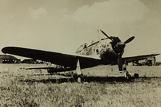

昭和二十年三月頃には本土空襲が激しくなり、内地での飛行訓練も難しくなったので、満州の教育飛行団に配属になった。 戦闘機関係の百九十名は東満の「佳木斯」(チャムス)周辺の三ヶ所の飛行場に別れて、七月下旬には実戦機「隼」の操縦訓練に励んでいた。
八月八日非常呼集が有りソ連の参戦を知らされた。 黄疸のため病室におったが、抜け出して飛行機の整備応援に行き、体調の悪さも忘れて「隼二型」一機を整備し本部に報告に行くと、教官より操縦を禁止され、数人の将校と整備兵達と共に陸上輸送隊の方に編入されてしまい口惜しい思いをした。
翌日同期生達の飛び立つのを見送り、残務整理を済まして十一日特別輸送列車で「牡丹江」 (ボタンコウ)に向け出発したが、同日午後国境から約百キロ程の「林口」(リンコウ)駅でソ連機の襲撃を受け、列車の一部を破壊され、二名の戦死者をだすなど大きな損害を受けた。
運行出来る状態に回復して出発したのは翌朝であった。 途中被弾した機関車の水が無くなり田圃や川の水を補給しながら「牡丹江」に辿り着いたのは夜、このとき街はすでに所々で黒煙が見られる混乱状態で、駅には避難してくる人々が溢れていた。 (牡丹江は八月十五日にはソ連軍に占領された)
機関車が調達でき八月十三日真夜中に出発翌朝「ハルピン」に到着したが、ここはまだ平穏であった。 再度機関車をかえて集結地の「奉天」 (ホウテン) [現在は瀋陽(シェンヤン)]に向けて出発し、十五日午前「四平街」(シヘンガイ) [現在は四平(スーピン)] に到着 、明日は奉天に着くので出発以来三日ぶりに飯盒（はんごう）で米を炊く事にした。 炊きあがる頃同駅にいた避難列車の人達が数人きて「北満から避難してきたが食糧が確保できない子供達に少し分けて欲しい」と申し込まれ、必死の様子に打たれ何も言わず全部渡したが、この先この人達はどうなるかと心が痛んだ。
八月十六日奉天北飛行場に着き本隊に合流したが、全ての計画は完了しており、我々陸送隊員はなんの任務も与えられず、同期生達の準備行動を応援する雑用だけで黙々と戦術等の文書を焼くのみであった。 十八日になり武装解除命令が出され、最新鋭機を含め約二百機近くを飛行場に並べる作業をしたが、いずれかの国に接収されるのかと思うと、とめどなく涙が流れたことを憶い出す。
八月十九日五十八期教団関係者の内地送還命令を受け本部隊員若干を残して即刻出発し、二十日に満朝国境を本部隊員若干を残して即刻出発し、二十日に満朝国境を通過した。 その後いろいろあったが列車で平壌・京城・釜山を経由して、硫黄を積んだ貨物船に便乗、甲板で過ごしながら八月下旬山陰の「境港」に無事到着した。 境港から京都にでる間、両側の山の上まで耕されている緑の景色に、日本は狭いが美しいなぁと感じたが、東に進んで名古屋・東京が焼け野原になっている景観との対照は二十歳の心に何とも言えない影を深く刻みこんだ。
あれから五十年も経過した今でも、ときどき「牡丹江」「四平街」での光景や出来事が思い出され、戦争の忌まわしさは二度と味わいたくないと思っている。
一式戦闘機「隼」

第二次世界大戦時、帝国陸軍における事実上の主力戦闘機。
一式戦闘機（いっしきせんとうき）が正式名称で、隼（はやぶさ）の愛称がありました。 総生産機数は5,700機以上で、旧日本軍の戦闘機としては海軍の零式艦上戦闘機（ゼロ戦）に次いで2番目に多い。 開発は中島飛行機。 猛禽類のハヤブサと同様に加速性や運動性が非常に高いのが特徴でした。引用: wikipedia